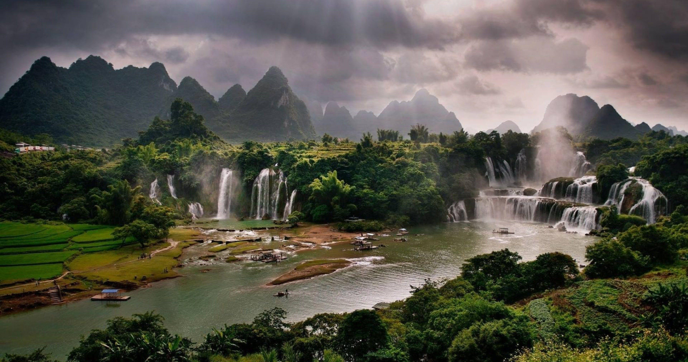
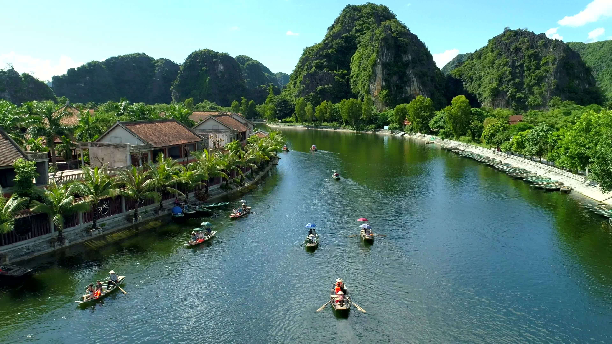

Journey along the Mekong through Cambodia and Vietnam, where time seems to slow and tradition thrives. Explore rural villages, bustling markets, and receive a special Buddhist blessing from monks. Discover Phnom Penh's Royal Palace and National Museum, and meet artisans crafting local delicacies. Ride by oxcart, tuk tuk, and trishaw as the Mekong reveals its vibrant, timeless spirit.
Learn More
Begin your adventure in lively Ho Chi Minh City, the "Pearl of the Orient," where tradition meets modern energy. Sail the Mekong River and glimpse a world where ancient customs still flourish. Visit rural villages, pagodas, and markets, and receive a special blessing from Buddhist monks. Meet skilled artisans and savor the culture, beauty, and spirit of Vietnam and Cambodia.
Learn More